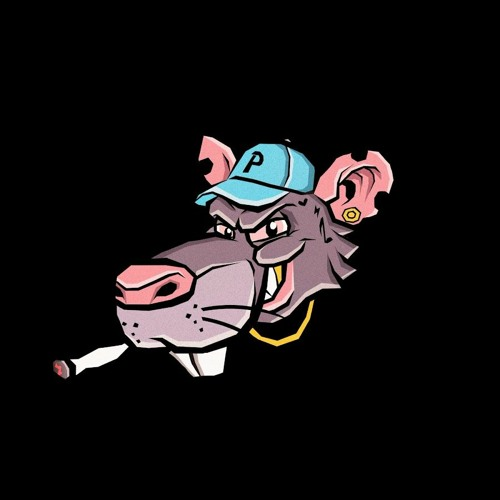
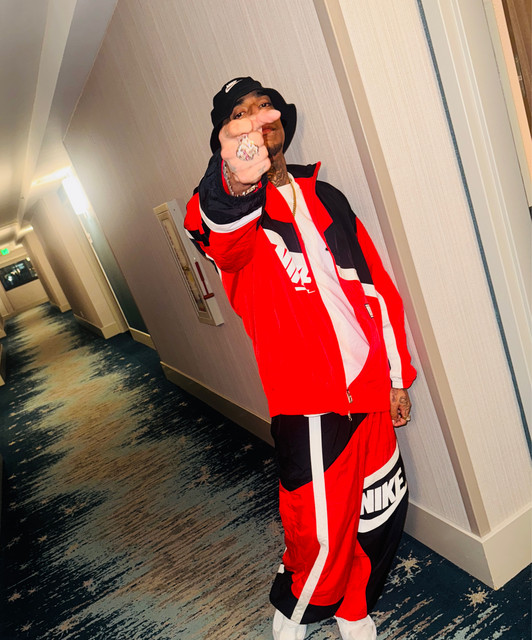

Sobre su discografía
Pirlo 420, exponente urbano de Cali, cuenta con una discografía enfocada principalmente en el trap y el rap callejero. Su estilo se caracteriza por letras directas y ritmos modernos que han ganado popularidad entre los seguidores del género urbano.
A lo largo de su carrera ha publicado varios proyectos musicales que destacan dentro de la escena urbana colombiana.


Álbumes y EP destacados
- EL ANDROIDE (2025)
- LA LUZ DEL BARRIO (2025)
- EL FICTICIO (2025)
- Gangsters En La Disco (2024)
- The Mouse XXIII (2022)
- Uno Se Cura (2026)
Canciones populares
- CUÍDAME
- Le Falta la Forty
- COMO JERRY
- Gangster En La Disco
Tabla de Discografía
| Año | Proyecto | Tipo |
|---|---|---|
| 2022 | The Mouse XXIII | Álbum |
| 2024 | Gangsters En La Disco | Álbum |
| 2025 | EL ANDROIDE | Álbum |
| 2025 | LA LUZ DEL BARRIO | Álbum |
| 2025 | EL FICTICIO | Álbum |
| 2026 | Uno Se Cura | EP |
| Información general de la discografía del artista | ||
Puedes escuchar más música de Pirlo 420 en Spotify.